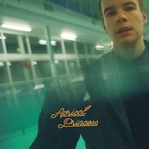
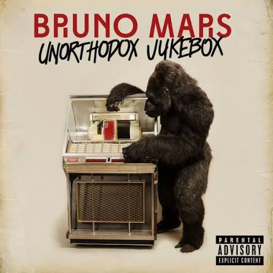
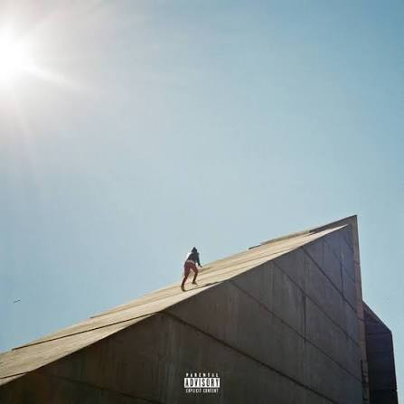

About Me
Hello! My name is Theo Augustine B. Balares. I am a first-year BSCS student at Bicol University. I am from camsur and a slow learner but make an effort to keep up . I chose Computer Science because of the influence of my older brother, and I hope to learn programming along with my peers.
My Hobbies and Goals
Hobbies
- Playing Sports Like Chess, Basketball, Badminton
- Singing When There Is No One Around
- Laying along With My Pillows and Blanket
My Top 3 Goals
- Learn About The Basics Of Programming
- Be Financially Stable
- Be Happy In Life
My Class Schedule
| Subject | Day | Time |
|---|---|---|
| CS 101: Introduction to Computing | Monday | 09:00 AM - 12:00 PM |
| CS 102: Computer Programming 1 | Monday, Tuesday, Wednesday | 01:00 PM - 04:00 PM, 01:00 PM - 03:00 PM, 01:00 PM - 04:00 PM |
| GEC 11: Understanding the Self | Friday | 01:00 PM - 4:00 PM |
| Math 101: Mathematic Analysis | Tuesday, Thursday, Friday | 09:00 - 10:30 AM, 09:00 - 10:30 AM, 10:00 AM - 12:00 PM |
| NSTP 11: LTS | Saturday | 07:00 AM- 09:00 AM |
| PATHFfit 1: Movement Competency Training | Wednesday | 07:00 AM - 09:00 AM |
| Phys 1: Physics for Computing | Tuesday, Thursday | 10:30 AM - 12:00 PM, 10:30 AM - 12:00 PM |
My Reflection
Making my first website in HTML was a new and exciting experience. I learned that HTML is like the skeleton of a webpage, and using tags like headings, paragraphs, lists,and tables helped me organize my information clearly. The easiest part was seeing my changes appear in the browser right after saving.Sometimes I felt confused when my content did not appear where I wanted,usually because I forgot to close a tag order placed it in the wrong section.Fixing these mistakes tookpatience, but it taught me to check my code carefully. I still have a lot to learn, but I am proud of my work and excited to make more projects.
My Path Into Computing
Computer was my backup program from my first choice program, But know that I am here I begin to love and enjoy the computer science field, each day I learn something new and till this dayI still don't know where would it take me, I think I will just go where destiny takes me.
My Favorites
One website I enjoy visiting is YouTube Music because everytime that I commute, youtube music is the one that I enjoy listening music to, it is just relaxing listening to music while staring at the window and admiring the busy street.
My Favorite Artists
My top five's top five
1. Rex Orange County

- Happiness
- 4 Seasons
- Best Friend
- Television / So Far So Good
- Never Enough
2. Juan Karlos
- Demonyo
- Buwan
- ERE
- Shot Puno
- Medyo Ako
3. Panic!At The Disco

- The Only Difference Between Martyrdom and Suicide Is Press Coverage (2025 Remaster)
- Camisado (2025 Remaster)
- I Write Sins Not Tragedies (2025 Remaster)
- I Constantly Thank God for Esteban (2025 Remaster)
- Build God, Then We'll Talk (2025 Remaster)
4. Bruno Mars

- It will Rain
- When I Was Your Man
- On My Soul
- If I Knew
- Billionaire
5. daniel Caesar

- Japanese Denim
- Please Do Not Lean
- Loose
- Superpowers
- Entropy
My Artists and Citations
| Artist | Citation |
|---|---|
| Rex Orange County | Source |
| Juan Karlos | Source |
| Panic! At the Disco | Source |
| Bruno Mars | Source |
| Daniel Caesar | Source |